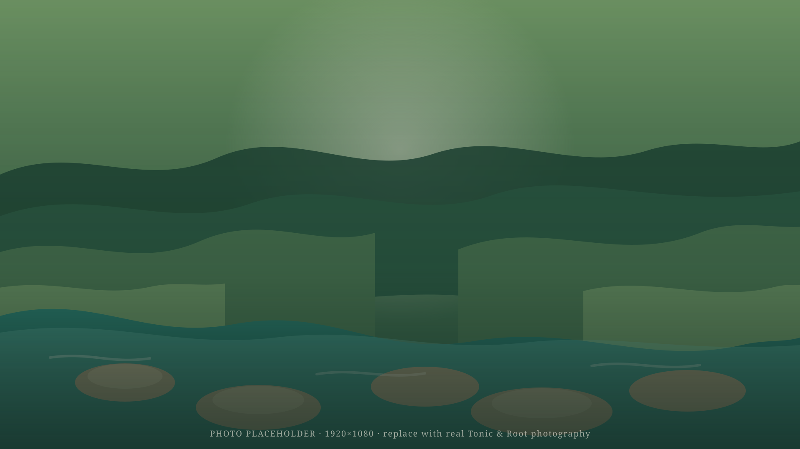
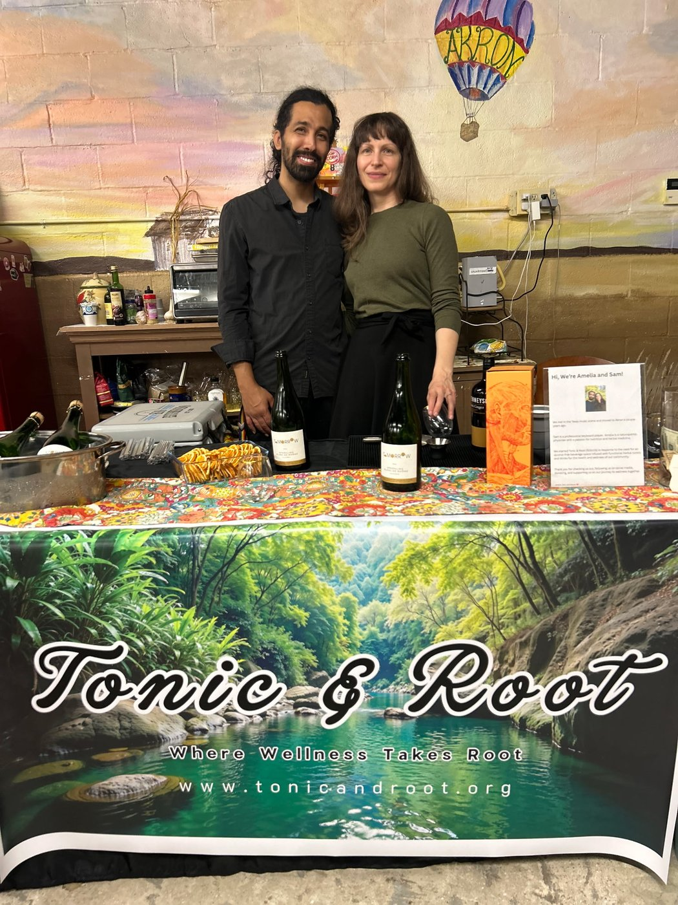

Botanical Tonics & Elixirs
Hand-crafted, alcohol-free tonics made with real herbs, roots, and a little patience.

A Botanical Wellness Pop-Up
Where Wellness Takes Root
A slower kind of pop-up, founded by naturopathic physician Amelia Love — and the neighborhood front door to Cadence Holistic.
Our Story
Tonic & Root is a small, wellness-focused pop-up built around botanical tonics, thoughtful goods, and a little quiet in your day.
It's also the neighborhood front door to Cadence Holistic, the 501(c)(3) nonprofit naturopathic practice behind it. Find us at markets and community pop-ups, stay for the calm, and when you're ready for more, we'll help you take the next step.

Founder & Owner
Amelia founded Tonic & Root as an easier way into naturopathic care — no waiting room, no rush, just a warm place to start.
As a naturopathic physician, Amelia believes real healing takes real conversation. She built Tonic & Root to be the kind of place you'd want to visit even before you knew you needed it — and the front door to Cadence Holistic, the nonprofit practice where she sees patients.
Consultations happen through Cadence Holistic, so the same unhurried, whole-person care she brings to this counter follows you into the treatment room.
What You'll Find Here
Hand-crafted, alcohol-free tonics made with real herbs, roots, and a little patience.
A small, thoughtful shelf of teas, herbal remedies, and everyday self-care staples.
Quiet corners to sit, breathe, and be reminded that slowing down is allowed.
Our Roots
Tonic & Root is part of Cadence Holistic, a 501(c)(3) nonprofit dedicated to accessible, whole-person naturopathic care. Every tonic poured here helps support that mission.